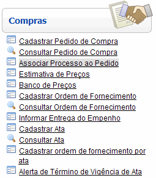
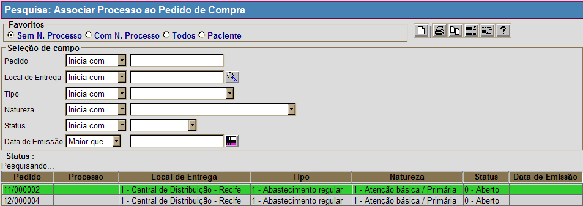
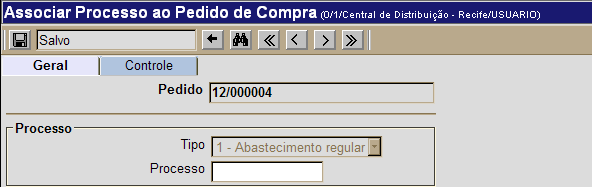

Associar Processo ao Pedido [ Voltar ]Utilize esta tela para realizar no sistema a associação de um processo a um pedido de compra. O formulário "Associar Processo ao Pedido" encontra-se dentro do menu "Compras". 
Ao clicar no formulário, o sistema exibirá a seguinte tela: 
Para associar um processo a um determinado pedido, siga os passos abaixo: 1º Passo: configure a pesquisa para localizar o pedido de compra desejado. Utilize os filtros disponíveis na tela refinar a pesquisa. 2° Passo: após localizar o pedido de compra para o qual deseja cadastrar um processo, selecione-o com um clique.  3° Passo: no campo "Processo", informe o número do processo ao qual o pedido está associado. 4° Passo: em seguida, clique no botão  para salvar o cadastro. para salvar o cadastro.
|